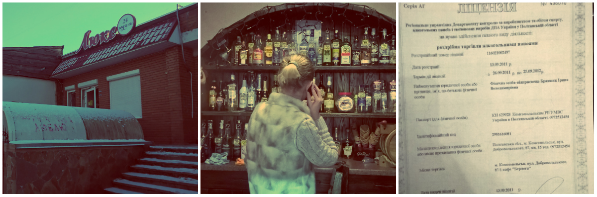
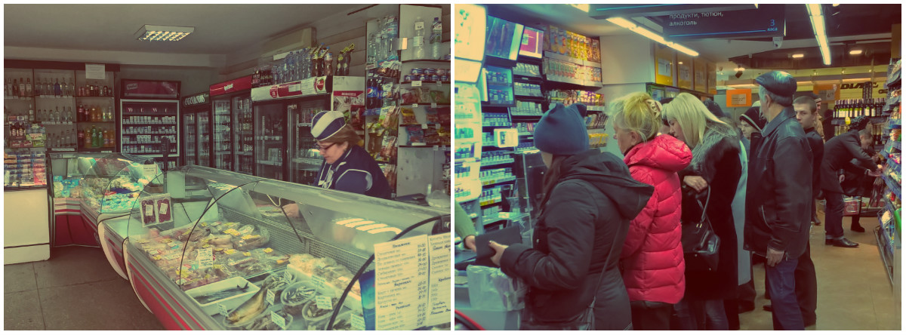
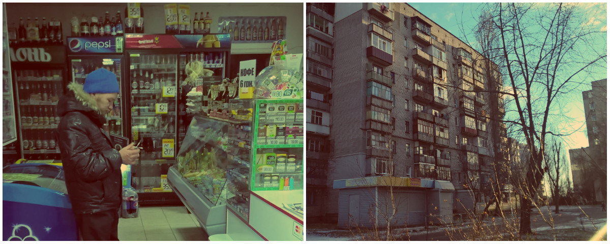

Ми продовжуємо досліджувати міста з низькою кількістю виданих ліцензій на алкоголь. У Горішніх Плавнях, за офіційними даними, налічується 119 ліцензій на роздрібний продаж алкоголю. Це 21,7 ліцензій на 10 тисяч населення — найменше у всій Полтавській області та нижче середнього показника по Україні майже на 7 процентних пунктів. Місто, на відміну від Черкас і Болехова, заможне, адже тут працює завод (Полтавський гірничо-збагачувальний комбінат), який обробляє залізну руду і продає її на світових ринках. Разом з тим у місті процвітає підпільна торгівля фальшивим алкоголем та самогоном
Над проектом працювала: Любов Величко
Опубліковано: 13 грудня, 2016 | Приблизний час на прочитання 5 хв
Таксисти-алкокур’єри
2:20 ночі. Місто Кременчук. З автовокзалу я їду в Горішні Плавні на таксі. Шлях туди займає близько півгодини, і в нас із таксистом Анатолієм зав’язується дружня розмова. Дізнавшись про моє розслідування, водій зізнається, що перевозить не лише людей, а й різні заборонені законом товари:
— Ми, таксисти, знаємо про наше місто все. І всі знають нас. Якщо треба знайти простітутку, чи наркотіки або самогон привезти з точки «А» в точку «Б», — це ж всігда пожалуста. Обсуждаємо ціну питання — і дєло в шляпі, — гордо заявляє таксист.
Толя каже, що доставити самогон для нього — раз плюнути. Його клієнти — це переважно підприємці, які переливають самогонку або «пальонку» у пляшки під виглядом акцизного товару.
— Платять за доставку 20—50 гривень плюс тариф таксі. Замовлень вистачає, — каже алкокур’єр.
Мій тариф за 31 кілометр — 112 гривень, але водій безкоштовно дві з половиною години катав мене містом і показував визначні (з точки зору підпільного продажу алкоголю) місця: кіоски, магазини та генделики. Він може собі дозволити так вільно розпоряджатися своїм робочим часом. Запевняє, що його місячний дохід досить хороший як для провінційного міста.
— От же влетить мені, якщо напишете, як я виглядаю і яка в мене машина, — каже він кожні десять хвилин. І я йому вірю.
Нічні кіоски — ще одне місце, де можна купити безакцизний алкоголь. Вдень тут продають шоколадки, цигарки та мінералку, а після дев’ятої вечора — міцні напої.
Ми під’їжджаємо до кіоску, біля якого стоять двоє чоловіків, одягнутих, м’яко кажучи, не за останнім писком моди. Покоцані кросівки, зім’яті брудні джинси, чорний здутий пуховик плюс кількаденна небритість і вкриті густою червоною павутинкою очі — а як іще на світанку має виглядати людина, яка п’є?
Маленьке віконечко відчиняється, рука покупців занурюється всередину кіоску. Дві секунди — і в компаньйонів уже є дві пляшки горілки. Побачивши нас із Толіком, вони швиденько сховалися за кіоск і почимчикували в бік дитячого майданчика.
Клієнти у таких кіосках одні й ті ж. Але якщо через неякісний алкоголь людина потрапить до лікарні, звинувачувати можна буде лише себе самого: товарного чеку немає, акцизу немає, а продавець узагалі скаже, що тут ніколи алкоголь і не продавався.
Також безакцизну горілку продають у підвалах та звичайних квартирах. Алкоділки беруть гроші тільки в тих покупців, яких добре знають. А нових людей отоварюють лише за рекомендаціями постійних клієнтів.
Щоб купити спиртне у нелегала, потрібно знати комбінацію стуку в двері (наприклад, два швидких удари в двері і три удари з більшим інтервалом) і фразу-пароль «я — від Женьки», «у вас сірники є?» або «я з приводу пепсі-коли».
— У місті є точка — підвал, у якому бомжі роблять щось схоже на вино та коньяк. Вони ж там і живуть. Їм привозять самогон, а вони туди воду підливають і порошки всякі — для запаху та смаку. Трудяться багато років, і ніхто їх не чіпає, — каже Толя.
Бар без ліцензії
Є в Горішніх Плавнях і пристойні, на перший погляд, заклади, які продають пляшки з етикетками елітного алкоголю без дозвільних документів.
У барі «Берлога» (вул. Добровольського, 87/1) за пляшками дорогого алкоголю заховалася якась незрозуміла ксерокопія. Дівчина-бармен каже, що це і є ліцензія на продаж спиртних напоїв, але вперто не хоче показувати її:
— А це у вас часом не ліцензія на продаж алкоголю?
— Так. Але вона скотчем приклеєна. І це не оригінал.

Ліцензія в барі є. Але вона недійсна уже п’ять років.
— А податкова з перевірками до вас ще не навідувалася? — після цієї фрази дівчина розгублено дивиться на мене, а потім іде на кухню і комусь телефонує.
Уже через 5 хвилин в магазин забіг чоловік, який відмовився представитися, але слухняно зняв ксерокопію. Виявилося, що це ліцензія за 2011 рік. Актуальних документів у закладу не виявилося.
— А що це за перевірки? Ви нас у податкову здасте? — цікавиться чоловік.
— Чому ви працюєте без ліцензії?
— Не знаю... Я не власник.
Тяжкі будні легальних торговців
Магазин «Айдіс» — прототип класичного совкового гастроному. Зараз він стоїть порожній, хоча асортимент алкогольної продукції тут немаленький. Дві продавчині в гарненьких фартушках настільки знудилися, що почали зі мною розмовляти про життя, не відходячи від каси.
— Де ж ваші покупці?
— Та де? Десь ходять. Ви перша, хто за останні півгодини зайшов. Отак живемо від зарплати до авансу. Від зарплати до авансу, — зітхає молода продавчиня Оля, витираючи пил із прилавку. В її очах — тінь відчаю та безнадії.
З відкриттям у квітні магазину «Маркетопт» продажі в конкурентів у цьому районі впали вдвічі.
Через те, що невеличкі магазини купують незначні партії, то й закупівельна ціна в них значно вища, ніж в оптовому магазині:

Супермаркет відбирає клієнтуру в маленьких магазинів
— У нас же в основному лікер, горілка. А люди ходять в «Маркетопт» і зразу там затарюються по повній програмі. Як ми можемо з ними конкурувати?
У сусідньому генделику ситуація аналогічна:
— Приходить до мене постачальник сьогодні і каже: «Дивись, ми тобі пиво по 21,50 продаємо, а «АТБ» уже зі своєю націнкою його по 19 гривень на полиці виставляє. А те пиво, яке ви купуєте на продаж по 10 гривень, в супермаркеті — по 9. Є ж різниця? А це тому, що супермаркети напряму із Києвом працюють, а ми — з Кременчуком».
— Щось я давно Інни не бачив. Вона що трєзвєніцою стала? — дядько за столом явно шукає, з ким би його випити о дванадцятій дня у вівторок.
Ірина, керівниця магазину «Маркетопт»:
— У нас справи теж не фонтан. Бо ми націнку в 20% не робимо, як наші конкуренти. Але вся продукція у нас ліцензійна, — божиться вона.
Знайомлюся з асортиментом. Шампанське — по 67 гривень, червоне вино — по 36.
Винятки з правил
Дані онлайн-бази ліцензій на продаж алкоголю, розміщені на офіційному сайті ДФС, часто неповні. Чи не кожен третій заклад, про якого немає інформації в Інтернеті, насправді має дозвільні документи.
— Криза в нас тепер. Купувати ліцензію стало невигідно. Покупців дуже мало. Ми вже й посміхаємося, я он червоною помадою стала частіше фарбуватися і вії наростила, щоб до мене покупці частіше приходили. Не допомагає! — каже продавчиня з магазину на Героїв Дніпра, 49.
На сусідній вулиці — Добровольського — така ж проблема. Ліцензія є, але клієнтів дуже не вистачає.
Деякі підприємці настільки бояться штрафів податкової, що про всяк випадок зберігають величезні стоси документів та їх копій, навіть якщо вони вже неактуальні.
— Тут коли по закону працюєш, то купа штрафів. А якщо ще обманювати, то взагалі розоритися можна! — каже молодий співвласник магазину «Люкс» Максим, який разом зі своєю мамою веде бізнес уже не перший рік, і показує мені дві картонних коробки, в яких зберігається вся бухгалтерія. — Ці перевірки з Полтави вже задовбали!
У магазині за прилавком стоїть чоловік у чорному пуховичку і книжечкою «Євангеліє». Це місцевий жебрак, який щодня стоїть під церквою, що розташована через дорогу від магазину. По-свійськи спілкується із продавчинею, аж раптом у неї в руках дзвенить телефон:
— Так, святий отець... Дати Олексія? — жінка віддає слухавку жебракові.
— Доброго дня, святий отець. Що ви хотіли? Ага, скоро буду.

Раб Божий Олексій — жебрак зі стажем і знає місця, де продають дешевий самогон
Раптом чоловік звертає увагу на мене:
— Дозвольте поцікавитися, як вас звати?
— Любов.
— А я раб Божий Олексій.
— А ви алкоголь вживаєте? Я тут алкогольні точки шукаю...
— Ні-ні, що ви. Але я вам можу показати точку, де сидять алкоголіки. Вони точно знають, де самогон продають.
Хто там? — Сто грам!
Йду з ним. Малосімейку на вулиці Добровольського, 37 називають «домом тєрпімості». Самогубства, нічні крики й бійки тут — звична справа. У крихітних квартирках живе багато неблагополучних сімей.
На першому поверсі злощасного будинку розмістився магазин, в якому продають ковбаси. Крім пристойних жильців, сюди щодня навідуються алкоголіки, в яких є гроші на закуску. А тутешній продавець Марина боїться темної пори доби.
— Я ж тут сама. Оце тільки смеркне, і як завалиться ціла компанія алкашні за закускою. І я собі думаю — тільки б не напали. Бо я одна з ними не справлюся! А ще й ці наркомани... Кошмар! — каже вона і благає не називати її імені, «бо приб’ють».
Стоячи в магазинній черзі, бабусі скаржаться на сусідів, бо навіть сидіти на лаві біля будинку не можуть через постійні посиденьки алкоголіків:
— Як вони вже задовбали, ці алканоїди! У них біля нашого будинку мов медом помазано. Бо сусідка вже багато років у себе в квартирі самогонку жене, — каже 72-річна Зінаїда Анатоліївна і хитає головою.
Інша пенсіонерка Ганна Іванівна згадує, як її сусідка продавала самогонку, але закінчилася ця історія трагічно:
— Жила одна така в приватному будинку. Ходили до неї, ходили, і вона їм самогонку в борг давала. Але якось не дала похмелитися одній алкоголічці. І та підпалила їй хату! Так от я тільки за те, щоб цих самогонщиків витурити! Любим способом! Любим! — ледь не зривається на крик бабця, а Зінаїда Іванівна в цей час схвально хитає головою.
Я ж хочу на власні очі подивитися на самогонний підпільний бізнес. Підходжу до під’їзду. На картонній лавочці дружно сидять п’ятеро чоловіків з червоними носами і запухлими обличчями. І мороз їм, здається, не страшний:
— А де у вас тут самогонку можна купити? — ніколи не думала, що колись доведеться ставити таке питання подібній компанії.
— О-о-о... Можна-можна. А вам яку треба? — чоловік у шапці-вушанці і тоненькій осінній куртці зацікавлено дивиться у мій бік.
— Якісну. І щоб печінка ціла, — це, здається, з області фантастики. Але сказано те, що сказано.
— Без проблем. Я вас навіть можу провести, — усмішка говорить, що за таку допомогу потрібно буде заплатити. — Півлітри — 20 гривень. Ну і мені п’ятьорку докинете?
20 гривень — дуже приваблива ціна для любителів випити. Адже після того, як податкова Полтавської області повідомила, що мінімальна ціна півлітрової пляшки горілки має бути не менше 54,90 гривень, тутешні магазини вмить попіднімали ціни до 55 гривень.
А ми тим часом хочемо зекономити. Заходимо в під’їзд. Інстинктивно затримую дихання. Так пахне дно. Всюди відчувається запах сечі та гнилі, а довершують образ розписані матюками стіни та облуплена стеля із пліснявою та голими дротами.
На дев’ятому поверсі в кінці коридору впираємося в залізні зелені двері, які в мене чомусь асоціюються з карцером. Вони мають маленьке віконечко — як те, через яке передають їжу в’язням.
Саша стукає у двері. Віконечко відчиняється, і в ньому з’являється повне обличчя жінки під п’ятдесят.
— Ой, а хто це? — жінка перелякано дивиться на мене.
— Не бійся. Вона — зі мною. Дай чекушку і півлітра.
Через кілька секунд жінка протягує склянку горілки, яку Саша випиває залпом, запивши водою. Потім жінка дає йому самогон у пластиковій пляшці з-під Боржомі. Справу зроблено.
Ми виходимо, і біля будинку проїжджає патруль поліції. Про цю точку правоохоронці прекрасно знають, але нічого робити не збираються.
Усі усе знають, усіх усе влаштовує
— А де у вас тут нелегально алкоголь продають? — питаю у простого прохожого.
— Та вєздє! На оптову базу підеш — там продають. У потрьопаний магазин зайдеш — і там пальонка. А генделиків у нас знаєте скільки? О-о-о... — чоловік махає рукою.
Утім, зі слів тутешніх правоохоронців, ситуація — контрольована. Принаймні так вони заявляють, коли звітують перед журналістами.
— Патрульні реагують, якщо є такі випадки. Ми організовуємо спільні рейди з дільничними інспекторами, вилучаємо алкоголь, якщо в приватних будинках його продають нелегально. І з податківцями навіть їздимо. Протоколи складаємо, — каже прес-офіцер Ірина і з ентузіазмом додає: — На сесію міськрад внесено питання щодо заборони продажу алкоголю після 10 вечора по наливайках.
— Ви вважаєте, що це допоможе побороти проблему нелегального збуту алкоголю?
— Ну-у-у... Розумієте, коли продають алкоголь після 10-ї вечора, то це впливає на рівень злочинності. Я знаю, що в багатьох містах ця практика вже впроваджена!
— У багатьох містах? А можете перерахувати ці міста?
— Не готова сказати. По-моєму, в Києві це є.
Подібні ініціативи існують скоріше для відволікання уваги від основної проблеми — продажу алкоголю без ліцензій та реалізації самогону. Адже про точки, де продають «пальонку», насправді усім правоохоронцям відомо. Список адрес із переліком квартир і будинків, де процвітає нелегальний алкобізнес, був навіть свого часу опублікований у місцевій газеті. Але замість того, щоб одним махом закрити ці точки, поліція вдала, що публікації не було.
Алкогольна карта Горішніх Плавнів
Якщо ви знайшли заклад, де торгують алкоголем і його немає на нашій карті, пишіть нам, вказавши адресу закладу, його координати на гугл-карті і додавши фото. Ми перевіримо інформацію у податківців і, якщо ваша інформація підтвердиться, додамо заклад на карту.
Тихе місто
Горішні Плавні — молоде промислове місто, якому днями виповнилося 56 років. Його заснували під час початку будівництва заводу-гіганта — гірничо-збагачувального комбінату, на якому добувають залізну руду. Нині в місті працюють і інші підприємства: на них добувають граніт, переробляють зношені шини, шиють одяг.
Інфраструктура міста дуже розвинута: тут достатньо шкіл та дитсадків, діють десятки гуртків та спортивних секцій, регулярно проводяться різноманітні фестивалі та спортивні змагання. Це зміг дуже добре оцінити журналіст Дмитро Булига, який стомився від шаленого ритму столиці та живе із родиною у Горішніх Плавнях уже понад три роки.
Для його родини це ідеальне місто:
— Для дітей тут є десятки гуртків: і футбол, і карате, і танці. Що хочеш! І все безкоштовно. Кафе, банки. А які в нас парки гарні, і озеро є. Що ще треба? — риторично запитує Дмитро.
Після восьмої вечора місто вже спить. Лише зрідка можна побачити пішохода чи автомобіль. Довкола панують тиша та спокій. Тільки продавці самогону не сплять — у них клієнти будуть допізна.
Проект здійснено за підтримки Міжнародного фонду «Відродження» (МФВ).